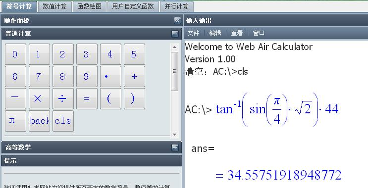
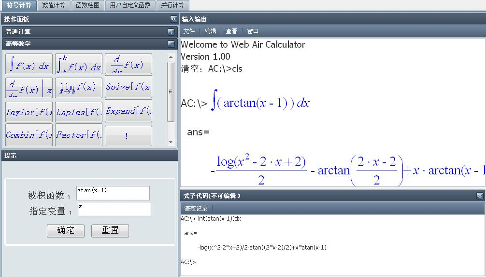
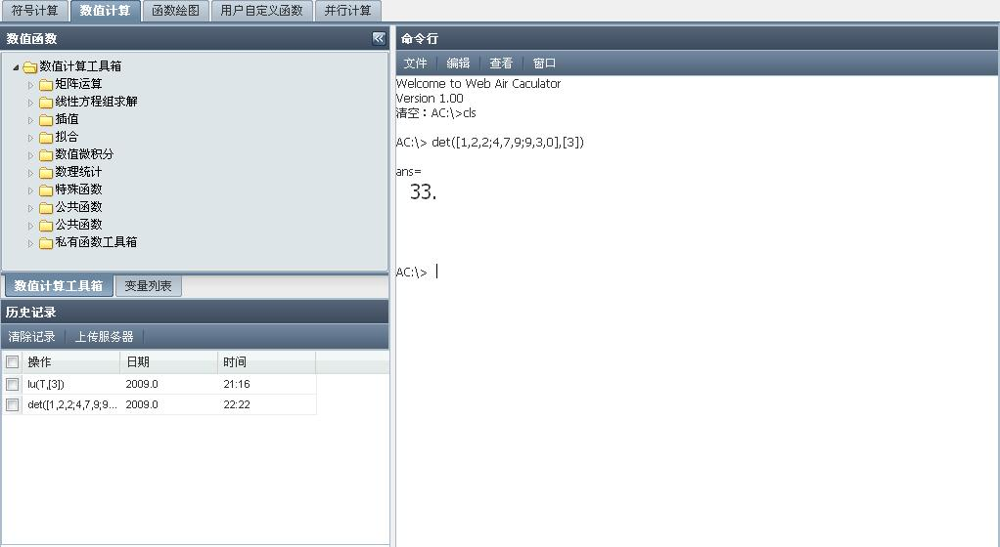

Air Calculator
1.通用命令
cls:清空命令行区域,使输入光标回到区域首行,作用同按钮
2.符号计算之普通计算

注:点击左面按钮面板可得右面命令式,当然也可直接在右面编辑你要计算的表达式,合法表达式即为一般算术表达式.
3.符号计算之高等数学

注:点击左面按钮面板可得右面命令式,此处右面命令行不可编辑.
4.数值计算

注:根据左面函数提示输入合法命令,击回车键得计算结果,一般格式为:函数+(变量列表),变量列表中的变量用[]括起,如上例.